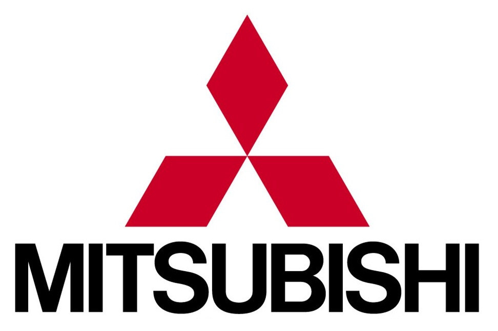
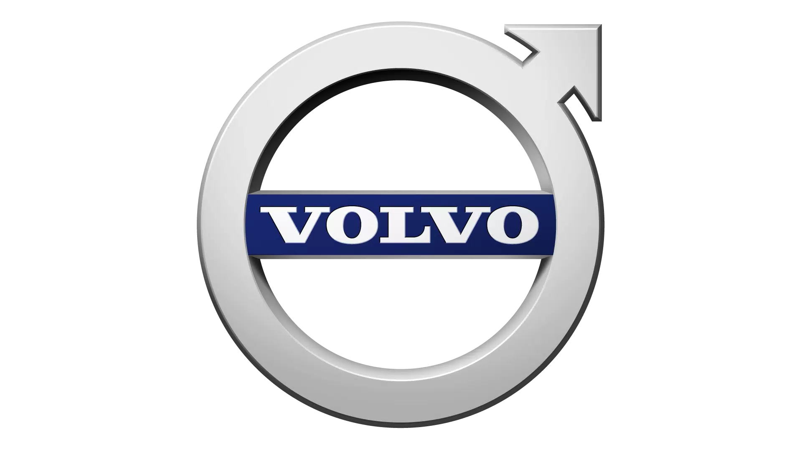
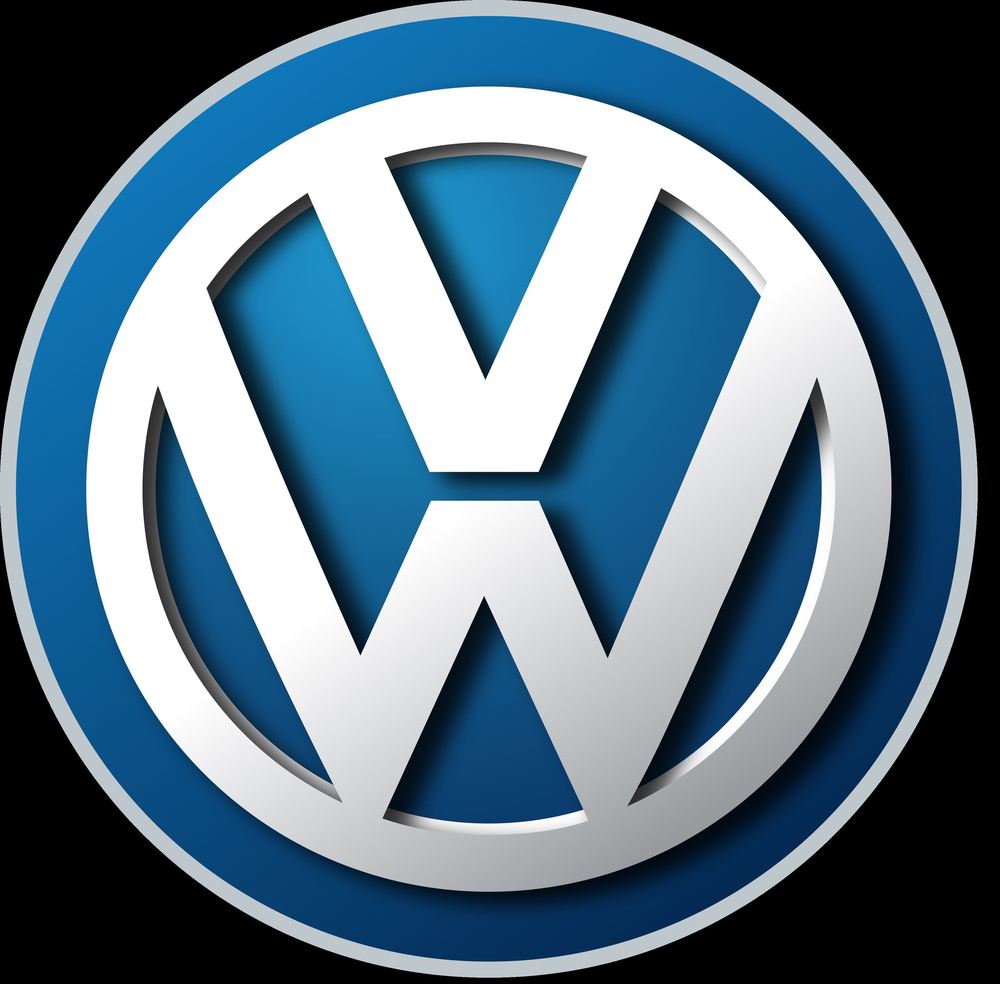

Японская автомобилестроительная компания, входит в группу (т. н. кэйрэцу) Mitsubishi — являющейся самой большой производственной группой Японии. Штаб-квартира — в Токио.
В 1970 году Mitsubishi Motors была сформирована из подразделения Mitsubishi Heavy Industries. Входит в Альянс Renault–Nissan–Mitsubishi.
Логотип компании основан на гербе провинции Тоса (три листа дуба) и гербе клана основателя компании (три ромба друг на друге).
В списке крупнейших публичных компаний мира Forbes Global 2000 за 2022 год Mitsubishi Motors заняла 1732-е место.

Шведская автомобилестроительная компания, производитель легковых автомобилей марки Volvo. Ранее Volvo Personvagnar входила в концерн Volvo. С 1999 года компания принадлежала концерну Ford. C 2010 года компания принадлежит холдингу Geely.
Слово «Volvo» происходит из латинского языка и изначально являлось лозунгом материнской компании — знаменитой SKF. Дословно название можно перевести как «Кручусь» или «Вращаюсь» (лат. Volv — кручение), но со временем устоялся вариант «Качусь».
Штаб-квартира — в городе Гётеборг, Швеция. Крупнейшие рынки — Китай (более 81 тыс. проданных автомобилей), Швеция (более 71 тыс.), США (более 70 тыс.), Великобритания, Германия. Самая продаваемая модель в 2015 году — Volvo XC60 (159 617 проданных автомобилей).

Wolkswagen
Немецкий автомобильный концерн. Штаб-квартира находится в городе Вольфсбурге, Германия. Концерн назван по марке Volkswagen (в переводе с нем. — «народный автомобиль»).
Компания Volkswagen Aktiengesellschaft, известная под аббревиатурой VW AG, возглавляет концерн, в который на конец 2021 года входило более 1500 дочерних компаний, совместных предприятий и партнёрств.
Компания выпускает автомобили под брендами Volkswagen, Audi, SEAT, Škoda, Bentley, Bugatti, Lamborghini, Porsche, Scania, MAN и Navistar, а также мотоциклы Ducati. Контрольный пакет акций Volkswagen AG принадлежит компании Porsche Automobil Holding SE.
В списке крупнейших публичных компаний мира Forbes Global 2000 за 2022 год концерн Volkswagen AG занял 25-е место[4], а в списке Fortune Global 500 — 8-е место